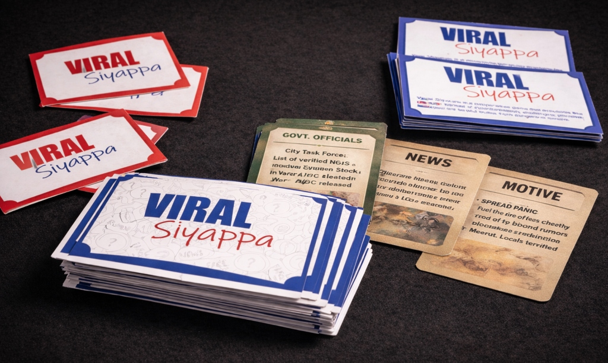

A game about misinformation. Viral Siyappa explores how misinformation spreads during moments of crisis by placing players inside chaotic, real-world information ecosystems.
PROJECT DETAILS
Project Type: Interactive Educational Card Game
Role: Game Designer, Narrative Designer, Visual Designer
Project Duration: 48 Hours
Platform: Tabletop / Card Game
Tools: Illustrator, Photoshop, Print Prototyping
Total Components: 50+ Game Cards, Chat Board, Rule System
WHAT IS VIRAL SIYAPPA
By turning rumor, panic, and collective decision-making into a shared gameplay experience, Viral Siyappa encourages critical thinking, discussion, and awareness, helping players understand how everyday choices around sharing information can shape public trust and societal outcomes.
PROJECT OVERVIEW
Viral Siyappa is an interactive card-based game that explores how misinformation spreads during moments of crisis and uncertainty. Through time-bound discussions, conflicting narratives, and collective decision-making, players experience the social chaos created by rumors, half-truths, and misleading information in real-world information ecosystems.
The game transforms an abstract and often invisible process—the spread of misinformation—into a tangible, playable experience. By placing players under pressure to filter, forward, and agree on information, Viral Siyappa highlights how fear, trust, and social influence shape decision-making. Every element, from card design to gameplay mechanics, is crafted to provoke discussion, reflection, and critical thinking.
Viral Siyappa aims to be more than a game; it functions as an educational tool and social simulation that encourages media literacy, responsible information sharing, and awareness of how everyday choices can impact public trust and collective outcomes.
The Concept
It is the peak of the pandemic. Panic is high, resources are scarce, and uncertainty dominates everyday life. Information floods in constantly news alerts, forwarded messages, social media posts, and word-of-mouth updates each claiming urgency and authority. Some messages carry genuine help and critical guidance, while others spread fear, misinformation, and false hope. Your phone never stops buzzing. Every decision feels urgent, every choice feels consequential. In a landscape overwhelmed by noise, half-truths, and manipulation, survival depends not just on access to information, but on the ability to question, verify, and decide together. Can you filter truth before it's too late?
The Design Process
This section outlines the journey behind Viral Siyappa, tracing the evolution of the game from an initial real-world trigger to a playable system shaped through rapid iteration and playtesting. Explore each chapter to understand how research, design decisions, and time-bound experimentation came together to transform misinformation into an interactive, discussion-driven experience.
Trigger
Identify an urgent, real world issue that fits the game jam theme.
Concept Lock
Freeze a strong core idea early to avoid scope creep.
System Sketch
Quickly map rules, roles, and the core gameplay loop on paper.
Rapid Build
Create playable components fast and iterate continuously.
Finalize
Test with fresh players, refine timing, clarity, and balance.
Finding the Core Idea
- Identified misinformation during crisis as an urgent, real-world trigger.
- Locked a single core idea early to avoid scope creep.
- Chose a social, discussion-driven game over a digital simulation.
Pick
Players choose their actions
Pass
Players share their choices
Decide
Players reach a consensus
Discuss
Players analyze and debate
Building the Game System
- Sketched rules, card types, and player actions on paper.
- Defined time pressure, hidden motives, and group consensus.
- Built physical components quickly and iterated continuously.
FINAL OUTCOME

A fully designed tabletop card game about misinformation.
You can play and print the game for yourself! Download the Print & Play version on Itch.io below.
PRINT & PLAY ON ITCH.IOREFLECTION
"This project pushed the idea that misinformation is easier to feel than to explain. Built in 48 hours, it proved a card table could simulate the same panic as a crowded group chat."